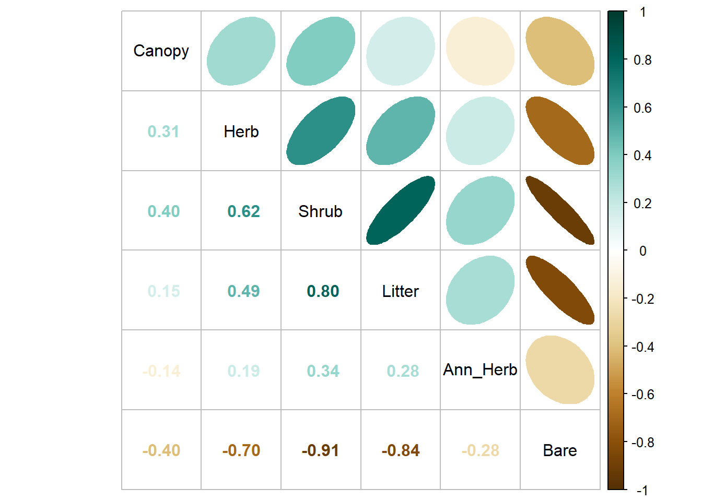
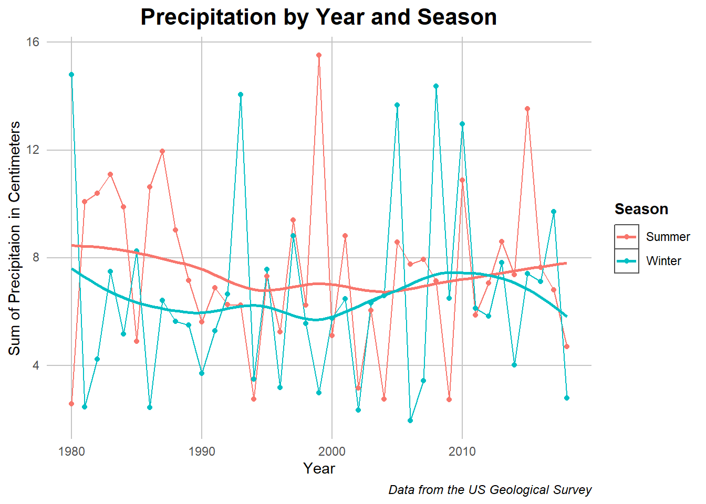
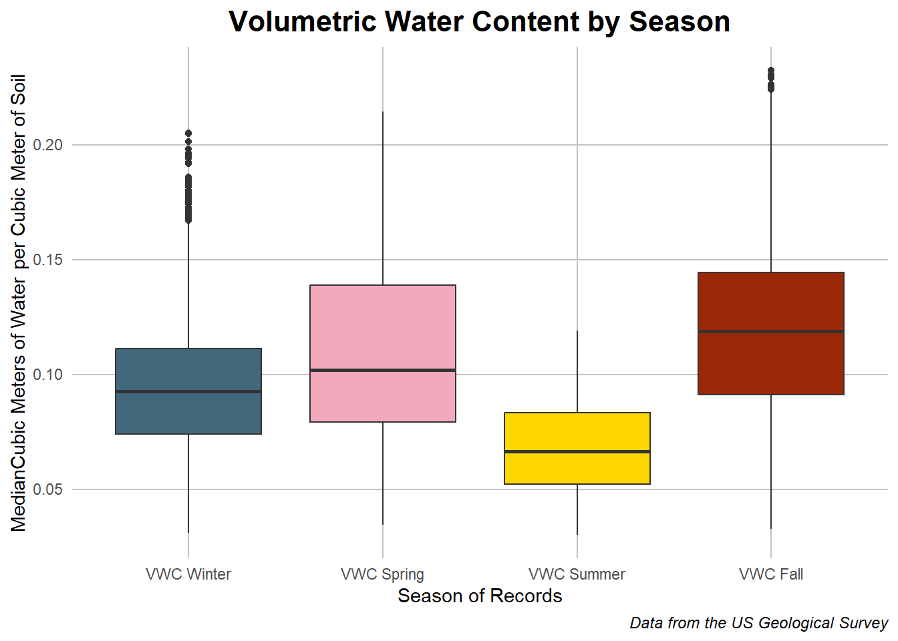
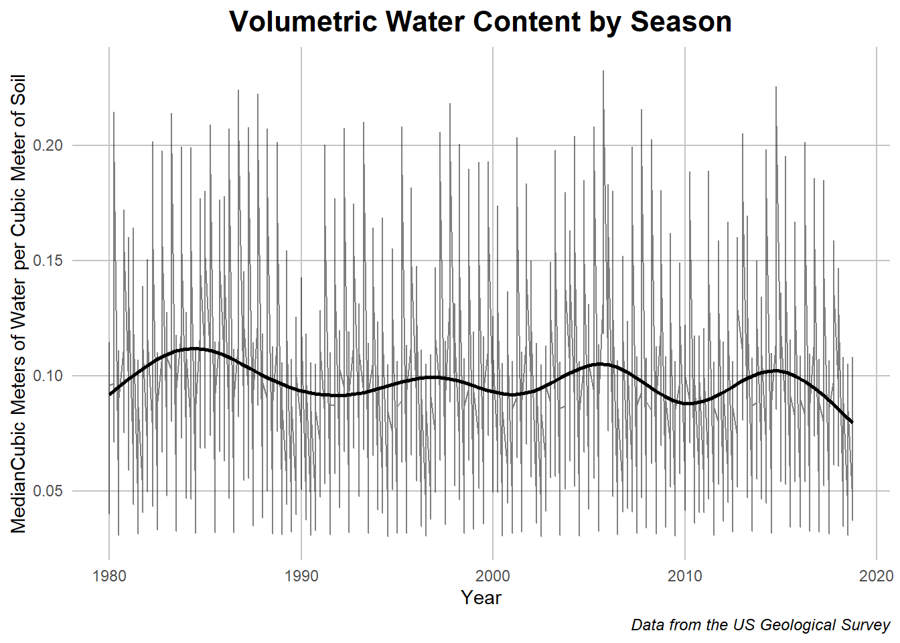
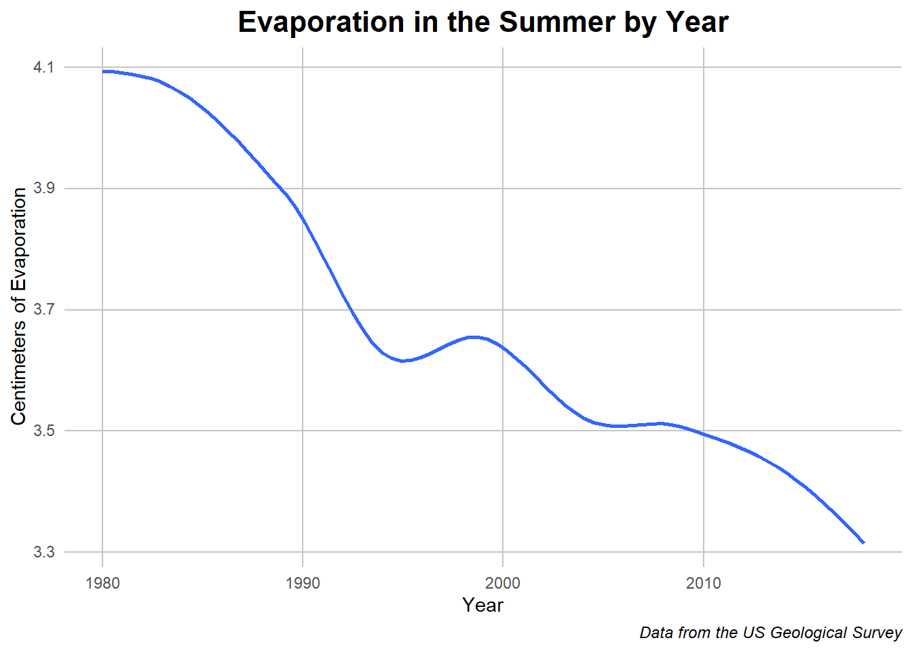
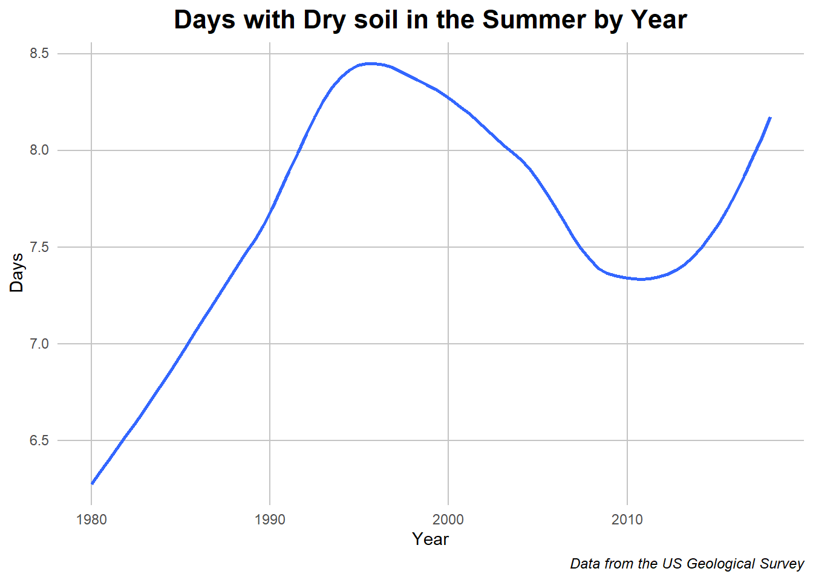
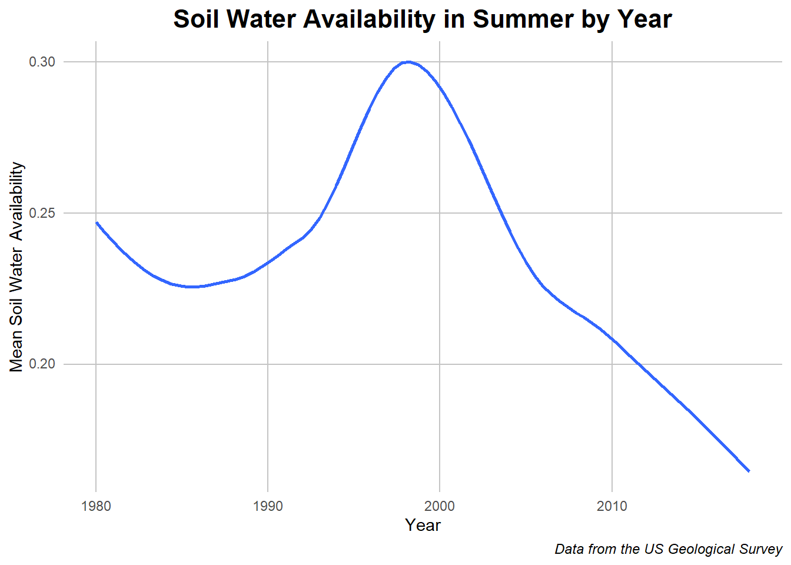
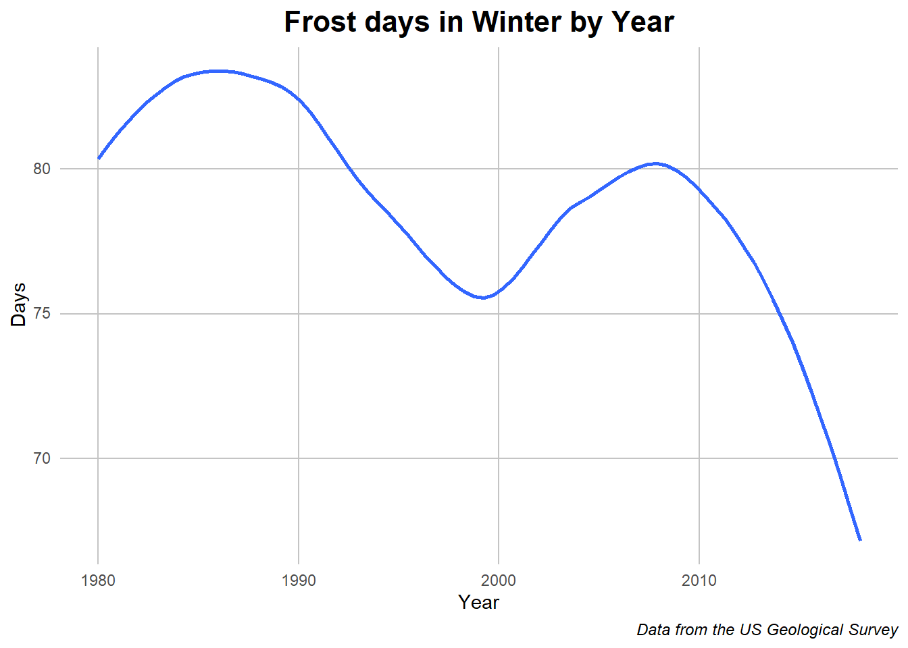

The dataset gathered by the United States Geological Service is a treasure trove of weather phenomena and unique insights into the climate within Natural Bridges National Park. Over the course of this page I hope to engage with the weather patterns of the area as well as report on the unique relationship between foliage, climate, and water which the data allows for.
Considering the Park’s Foliage
Before we get too lost, I’d like to start by examining the points of the park we have data on and the representative foliage. Each of the 113 locations within the park was measured for the percentage of coverage of each of the following variables: bare earth, herbs, plant litter, shrubs, ann herbs, and canopy coverage. The values in the data represent the percentage of each area covered by each of those values with the possibility of overlap in instances of trees covering bare earth or shrubbery or there being litter under plants. These six values give us the best understanding of the terrain in each of those locations across the park and they remain constant over all of the years recorded, giving a baseline about each location which can be built off of.
Foliage by Location
Caption: This interactive graph allows you to see the relationship of locations to each other, the variety in foliage composition, and the foliage composition of each location by clicking on it on the map.
When we dive into the locations themselves and the percentage of each variable on it, bare earth seems to be the most common in the park which isn’t much of a surprise due to the spare foliage of the desert-like terrain. Some locations closer to rivers and streams may also have more tree or shrub coverage due to the abundance of water in otherwise bare terrain. Which raises the question, are there relationships between the foliage types that arise from access to water or other variables.
InterFoliage Correlation
Code
## Reading in packageslibrary(tidyverse) ## for easier manipulationlibrary(corrplot) ## specifically for correlation plots## Reading in data and removing a wayward plottotal_cleaned <-read.csv("../Data/total_merged.csv") %>%select(-X)rownames(total_cleaned) <-NULL## Plot of the shrubbery (Insert monty python joke)corr <-cor(total_cleaned[,7:12]) ## Getting specific valuescorrplot.mixed(corr, order ='AOE', upper ="ellipse", upper.col =COL2('BrBG'), lower.col =COL2('BrBG'), tl.col ='black') ## a few accents to personalize it

Caption: This correlation plot shows the approximate shape of the data’s plot with the oval and gives the corresponding correlation coefficient accros the chart.
The answer seems to be yes. One would expect for their to be other plants where there are already some and this tends to be the case, with many of the foliage types having positive correlation to each other. Conversely, an increase in bare ground has negative correlation with many of the plants, showing the inverse to be true as well. This positive negative correlation holds true for all relationships other than canopy and ann herb. The highest correlated is the area taken up by shrubs and plant litter and the most negatively correlated is shrub and bare earth; both of these show that the shrub cover is one of the most linked variables, being both foliage and most in opposition to bare earth.
Now that I’ve set the scene for the different foliage types in the park, I want to transition to talking about weather patterns which act as a measure of the effects of climate change and can be further used to see hyper local effects.
Historic Temperature in the Park
Climate change has effected the world in many ways, from ecological to natural disasters as well as changes to parts of daily life, but none more so than the effect on temperature. Despite some year to year fluctuations there seems to have been an increase in temperature which many see continuing without heavy changes in human behavior. We can see some of this reflected in the average and extreme temperature changes in Natural Bridges National Park. The historic temperature shows some of this behavior and its ramifications will be disscused later in the paper.
Normalizied Temperature over Time
Code
## Graphing packageslibrary(ggplot2)library(plotly)## Data preprocessing for graphtemp_chunk <- total_cleaned %>%filter(RCP =="historical")temp_chunk <- temp_chunk[,c(3,20:23)] %>%na.omit()temp_chunk <- temp_chunk %>%group_by(year) %>%summarise_at(vars("T_Winter", "T_Summer", "Tmax_Summer", "Tmin_Winter"), mean) ## We need to keep unnormalized data for the final viz so I'm keeping track of ittemp_chunk_unorm <- temp_chunk %>%pivot_longer(cols =c("T_Winter", "T_Summer", "Tmax_Summer", "Tmin_Winter"))## Normalizing each of the columns before combiningtemp_chunk$T_Winter <- (temp_chunk$T_Winter -mean(temp_chunk$T_Winter)) /sd(temp_chunk$T_Winter)temp_chunk$T_Summer <- (temp_chunk$T_Summer -mean(temp_chunk$T_Summer)) /sd(temp_chunk$T_Summer)temp_chunk$Tmin_Winter <- (temp_chunk$Tmin_Winter -mean(temp_chunk$Tmin_Winter)) /sd(temp_chunk$Tmin_Winter)temp_chunk$Tmax_Summer <- (temp_chunk$Tmax_Summer -mean(temp_chunk$Tmax_Summer)) /sd(temp_chunk$Tmax_Summer)## Pivoting to make it easier to graphtemp_chunk <- temp_chunk %>%pivot_longer(cols =c("T_Winter", "T_Summer", "Tmax_Summer", "Tmin_Winter"))## I wanted there to be a label which didn't have underscoresnice_label <-c()for(i in1:nrow(temp_chunk)){if(temp_chunk[i,2] =="T_Winter"){ nice_label <-c(nice_label,"Avg Winter Temp.") } elseif(temp_chunk[i,2] =="T_Summer"){ nice_label <-c(nice_label,"Avg Summer Temp.") } elseif(temp_chunk[i,2] =="Tmax_Summer"){ nice_label <-c(nice_label,"Max Summer Temp.") } else{ nice_label <-c(nice_label,"Min Winter Temp.") }}temp_chunk$nice_label <- nice_label## brining back original data and putting together tooltip texttemp_chunk$unnorm_value <- temp_chunk_unorm$valuetemp_chunk <- temp_chunk %>%mutate(mytext =paste("Category: ", nice_label, "\nYear: ", as.character(year), "\nNormalized Temp.: ", as.character(value), "\nUnnormalized Temp.:", as.character(unnorm_value)))## Original Plot to ggplotlyplot_norm <-ggplot(data = temp_chunk, aes(x = year, y = value, color = nice_label)) +geom_smooth(se =FALSE) +scale_color_manual(values =c("#FA7988", "#4CB2F9","#EB001C", "#0145ED")) + my_theme +labs(title ="Normalized Temperature by Year") +theme(legend.position ="none") +#guides(color=guide_legend(title="Temperature Value")) +xlab("Year") +ylab("Normalized Temperature Celcius")## Unnormalized plot to get intersticial valuesplot_unnorm <-ggplot(data = temp_chunk, aes(x = year, y = unnorm_value, color = name)) +geom_smooth(se =FALSE) +scale_color_manual(values =c("#FA7988", "#4CB2F9","#EB001C", "#0145ED")) +theme_minimal() ## Plotlying itw <-ggplotly(plot_norm)w_unnorm <-ggplotly(plot_unnorm)## This was the step by which I created all the tooltip text I needed for the graphtext_1 <-paste("Category:", w$x$data[[1]]$name, "\nYear:", w$x$data[[1]]$x, "\nNormalized Temp.:", w$x$data[[1]]$y, "\nUnnormalized Temp. C.:", w_unnorm$x$data[[1]]$y)text_2 <-paste("Category:", w$x$data[[2]]$name, "\nYear:", w$x$data[[2]]$x, "\nNormalized Temp.:", w$x$data[[2]]$y, "\nUnnormalized Temp. C.:", w_unnorm$x$data[[2]]$y)text_3 <-paste("Category:", w$x$data[[3]]$name, "\nYear:", w$x$data[[3]]$x, "\nNormalized Temp.:", w$x$data[[3]]$y, "\nUnnormalized Temp. C.:", w_unnorm$x$data[[3]]$y)text_4 <-paste("Category:", w$x$data[[4]]$name, "\nYear:", w$x$data[[4]]$x, "\nNormalized Temp.:", w$x$data[[4]]$y, "\nUnnormalized Temp. C.:", w_unnorm$x$data[[4]]$y)## I applied it to the different lines here and printed it outw %>%style(text = text_1, traces =1) %>%style(text = text_2, traces =2) %>%style(text = text_3, traces =3) %>%style(text = text_4, traces =4)
Caption: This graph shows a normalized pattern of weather change in order to compare the difference across the different metrics. The un-normalized value can be found by hovering over each part of the line.
Since the 1990s, the average and maximum summer temperature has been climbing while the winter values took a steep dip, getting comparatively colder, before climbing again in the most recent decade. Some of the more recent and earliest climbing and falling slopes can be attributed to the model used to smooth out the yearly differences but, as we will see with the future scenarios, warmer summers and winters are expected in the future. Outside of this, the winter and summer temperature groups seem to follow similar behaviors as the averages indicates the maximum or minimum temperature. While occasionally the minimum winter temperature may seem to be higher than the average, this is an effect of the normalization and is not indicative of the weather trends over the years.
Temperature is one of the pillars that will make up the weather analysis going forward, but another equally important to this story is precipitation and its relationship with the soil.
Percipitation and Water Content
As mentioned, precipitation becomes an important marker of the amount of water entering the ecosystem and allowing for plant life to flourish or fail. Being in a dry and hot environment, precipitation has added importance in the state park. With this in mind, lets examine the precipitation over time.
Precipitation over Time
Code
## Data preprocessingppt_chunk <- total_cleaned %>%filter(RCP =="historical")ppt_chunk <- ppt_chunk[,c(3,18:19)] %>%na.omit()colnames(ppt_chunk) <-c("year", "Winter", "Summer")## Taking the average and pivoting for ease of visualizationppt_chunk <- ppt_chunk %>%group_by(year) %>%summarise_at(vars("Winter","Summer"), mean) ppt_chunk <- ppt_chunk %>%pivot_longer(cols =c("Winter","Summer"))## Plotting with overlaying geomsggplot(data = ppt_chunk, aes(x = year, y = value, color = name)) +geom_line() +geom_point() +geom_smooth(se = F) + my_theme +xlab("Year") +ylab("Sum of Precipitaion in Centimeters") +labs(title ="Precipitation by Year and Season") +guides(color=guide_legend(title="Season")) +labs(caption ="Data from the US Geological Survey")

Caption: This plot shows the year to year and ordinary least squares approximation of the precipitation in each season over the years.
Remarkably, the precipitation across winter and summer seems remarkably similar, with winter having slightly less centimeters of rain overall. Additionally, the amount of precipitation in the park seems to have stayed consistent over the years being measured. Climate change can change weather patterns but it does not seem to have effected this variable very much. Following this though, the precipitation rate is connected to two other variables: the volume of underground water reservoirs which is outside the scope of this article and the amount of water trapped in the soil. On the latter point, water is not valuable for plants if it sinks past the soil into a reservoir or river so how its captured in the soil becomes and important question. On this point, we will examine the relative capacity of soil to handle water across seasons and time.
Seasonal Volumetric Water Content
Code
## Data preprocessingvwc_chunk <- total_cleaned %>%filter(RCP =="historical")vwc_chunk <- vwc_chunk[,c(24:27)] %>%na.omit()colnames(vwc_chunk) <-c("VWC Winter", "VWC Spring", "VWC Summer", "VWC Fall")## Pivoting and reordering for visualizationvwc_chunk <- vwc_chunk %>%pivot_longer(cols =c("VWC Winter", "VWC Spring", "VWC Summer", "VWC Fall"))vwc_chunk$name <- vwc_chunk$name %>%factor(labels =c("VWC Winter", "VWC Spring", "VWC Summer", "VWC Fall"))## Plotting with season appropriate colorsggplot(data = vwc_chunk, aes(x = name, y = value, fill = name)) +geom_boxplot() +guides(fill=guide_legend(title="Season of Value")) + my_theme +labs(title ="Volumetric Water Content by Season") +xlab("Season of Records") +ylab("MedianCubic Meters of Water per Cubic Meter of Soil") +theme(legend.position ="none") +scale_fill_manual(values =c("#42687C", "#F3A8BC", "#FFD700","#9C2706")) +labs(caption ="Data from the US Geological Survey")

Caption: The boxplots are comparing the distribution of volumetric water content (VWC) across all years by season with the inner box containing the inner two quantiles and the range around it showing the outer two.
Based on this data, there are clear differences in the amount of water stored in the soil by season; a few reasons for this could be the temperature differences trapping water, an increased amount of rain in fall or spring, or heat in the summer sapping away water reserves through evaporation. The latter point will be examined with another variable, but for the rest of the relationships it seems that there is the most water in the ground during Spring and Fall with Summer allowing the least amount on average. While this is a slice of the behavior, just showing the seasonal difference, I’d also like to approach these variables across the years available in the data.
Seasonal Volumetric Water content 1980-2018
Code
## The data cleaning for this was done separately, saved, and added here to save timevwc_chunk <-read.csv("../Data/vwc_data_historic.csv")## Ploting with one overlay to give a general and specific viewggplot(data = vwc_chunk, aes(x = Year, y = value)) +geom_line(alpha = .5) +geom_smooth(se =FALSE, color ="black") + my_theme +labs(title ="Volumetric Water Content by Season") +ylab("MedianCubic Meters of Water per Cubic Meter of Soil") +labs(caption ="Data from the US Geological Survey")

Caption: this chart shows the seasonal differences in volumetric water content as well as a smoothed graph which approximates the behavior without the seasonal noise.
When spread out temporally, what jumps out at first is the extreme differences between seasons which manifests as visual noise in the line plot. This shows the yearly pattern of the previous graph while giving more information about the general trend. The smoothed line shows another parallel behavior, that of hills and valleys in the volumetric water content over multiple years which implies boom and bust weather cycles. This trend has ended on a low note in 2018 but seemed to have been trending towards a decline over the timescale as a whole. What this graph leaves us is trends over trends which we hope to explore as we go more into the analysis of the data.
Before that though, there are a few other variables to explore.
## Establishing the data used hereother_vars <- total_cleaned %>%filter(RCP =="historical")## Evap_summer summarizingother_graph1 <- other_vars %>%select(c(year, Evap_Summer))other_graph1 <- other_graph1 %>%group_by(year) %>%summarise_at(vars("Evap_Summer"), mean) ## Plottingggplot(other_graph1, aes(y = Evap_Summer,x = year)) +geom_smooth(se =FALSE) + my_theme +labs(caption ="Data from the US Geological Survey") +labs(title ="Evaporation in the Summer by Year") +xlab("Year") +ylab("Centimeters of Evaporation")

Code
## Dry Soil Days summarizingother_graph2 <- other_vars %>%select(c(year,DrySoilDays_Summer_whole))other_graph2 <- other_graph2 %>%group_by(year) %>%summarise_at(vars("DrySoilDays_Summer_whole"), mean) ## Plottingggplot(other_graph2, aes(y = DrySoilDays_Summer_whole,x = year)) +geom_smooth(se =FALSE) + my_theme +labs(caption ="Data from the US Geological Survey") +labs(title ="Days with Dry soil in the Summer by Year") +xlab("Year") +ylab("Days")

Code
## Non Dry SWA summarizingother_graph4 <- other_vars %>%select(c(year,NonDrySWA_Summer_whole))other_graph4 <- other_graph4 %>%group_by(year) %>%summarise_at(vars("NonDrySWA_Summer_whole"), mean) ## Plottingggplot(other_graph4, aes(y = NonDrySWA_Summer_whole,x = year)) +geom_smooth(se =FALSE) + my_theme +labs(caption ="Data from the US Geological Survey")+labs(title ="Soil Water Availability in Summer by Year") +ylab("Mean Soil Water Availability") +xlab("Year")

Code
## Frost days Summarizingother_graph3 <- other_vars %>%select(c(year,FrostDays_Winter))other_graph3 <- other_graph3 %>%group_by(year) %>%summarise_at(vars("FrostDays_Winter"), mean) ## Plottingggplot(other_graph3, aes(y = FrostDays_Winter,x = year)) +geom_smooth(,se =FALSE) + my_theme +labs(caption ="Data from the US Geological Survey") +labs(title ="Frost days in Winter by Year") +xlab("Year") +ylab("Days")

Caption: A collection of variables with a smoothed line showing the change over time.
Collected here are other variables worth consideration when thinking about water retainment in the soil. The first of which is the evaporation rate in the summer which we can assume to be one of the driving forces of the lower VMC. Following that is the number of days in summer with dry soil or very low water amount. This gives a compliment to the previous variable, showing the days after which evaporation and other forces have removed all the water. Next is the soil water availability in the summer which indicated a mesh of the two previous values. Lastly is a tangential representation of the number of frost days or days where the temperature was below 1 degree Celsius. It could be assumed on these days that the water in the ground would be frozen and thus retained.
Despite the overall upward or downward trends in the graphs, there seems to be a bump around 1998 where there seemed be more rain but also more heat which lead to more water availability in general but also more days with dry soil. These warm years are reflected in the frost day graph which showed a decrease in amount during that time. Outside of that, the trends show less water availability and thus evaporation along with fewer frost days. These trends thus indicate warming effects in the region and the effect of this on water retention in the area.
Conclusions
To recap, we looked at relationships between foliage and location, analyzed temperature differences, noticed precipitation patterns, and saw the interlocking effects of the latter two forces. Overall there seem to be shifts towards more extreme weather patterns with drastic linear effects on other variable relationships which cannot be ignored. Out of all of them. the question of how the sparse water that ends up with the plants gets their and is maintained in the soil will become the lense by which we view this data.